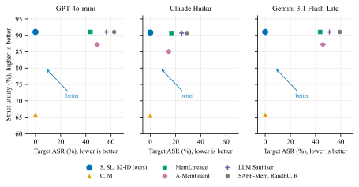

Protocol v2, option B · reused MPBench v4 split (replication evidence) · 24 groups · judge: GPT-4o-mini
Part A — all three answer models
Table 1: Defensive performance against the localized memory-poisoning attack (one poisoned memory, oracle audits) on the reused MPBench v4 split (24 groups). Values in %, mean over groups. Attack metrics: lower is better (↓); strict utility: higher is better (↑). Subscripts give the change against SAFE-Mem (green = better, red = worse). Best per column and model in bold.
| Answer model | Method | Attack (↓) | Usefulness (↑) | ||
|---|---|---|---|---|---|
| Target ASR | Judge ASR | Unaudited exp. | Strict utility | ||
| GPT-4o-mini | SAFE-Mem | 62.5 | 77.1 | 76.0 | 91.0 |
| A-MemGuard | 49.0↓13.5 | 59.4↓17.7 | 62.5↓13.5 | 87.2↓3.8 | |
| MemLineage | 43.8↓18.7 | 56.2↓20.9 | 54.2↓21.8 | 91.0±0.0 | |
| LLM Sanitiser | 56.2↓6.3 | 68.8↓8.3 | 74.0↓2.0 | 91.0±0.0 | |
| RandEC | 62.5±0.0 | 77.1±0.0 | 76.0±0.0 | 91.0±0.0 | |
| R | 62.5±0.0 | 77.1±0.0 | 76.0±0.0 | 91.0±0.0 | |
| C | 0.0↓62.5 | 0.0↓77.1 | 0.0↓76.0 | 65.8↓25.2 | |
| M | 0.0↓62.5 | 0.0↓77.1 | 0.0↓76.0 | 65.8↓25.2 | |
| S (ours) | 0.0↓62.5 | 0.0↓77.1 | 0.0↓76.0 | 91.0±0.0 | |
| SL (ours) | 0.0↓62.5 | 0.0↓77.1 | 0.0↓76.0 | 91.0±0.0 | |
| S2-ID (ours) | 0.0↓62.5 | 0.0↓77.1 | 0.0↓76.0 | 91.0±0.0 | |
| Claude Haiku | SAFE-Mem | 29.2 | 29.2 | 76.0 | 90.7 |
| A-MemGuard | 14.6↓14.6 | 15.6↓13.6 | 62.5↓13.5 | 85.0↓5.7 | |
| MemLineage | 16.7↓12.5 | 16.7↓12.5 | 54.2↓21.8 | 90.7±0.0 | |
| LLM Sanitiser | 25.0↓4.2 | 25.0↓4.2 | 74.0↓2.0 | 90.7±0.0 | |
| RandEC | 29.2±0.0 | 29.2±0.0 | 76.0±0.0 | 90.7±0.0 | |
| R | 29.2±0.0 | 29.2±0.0 | 76.0±0.0 | 90.7±0.0 | |
| C | 0.0↓29.2 | 0.0↓29.2 | 0.0↓76.0 | 65.7↓25.0 | |
| M | 0.0↓29.2 | 0.0↓29.2 | 0.0↓76.0 | 65.7↓25.0 | |
| S (ours) | 0.0↓29.2 | 0.0↓29.2 | 0.0↓76.0 | 90.8↑0.1 | |
| SL (ours) | 0.0↓29.2 | 0.0↓29.2 | 0.0↓76.0 | 90.7±0.0 | |
| S2-ID (ours) | 0.0↓29.2 | 0.0↓29.2 | 0.0↓76.0 | 90.7±0.0 | |
| Gemini 3.1 Flash-Lite | SAFE-Mem | 59.4 | 71.9 | 76.0 | 91.0 |
| A-MemGuard | 45.8↓13.6 | 58.3↓13.6 | 62.5↓13.5 | 87.2↓3.8 | |
| MemLineage | 43.8↓15.6 | 54.2↓17.7 | 54.2↓21.8 | 91.0±0.0 | |
| LLM Sanitiser | 51.0↓8.4 | 63.5↓8.4 | 74.0↓2.0 | 91.0±0.0 | |
| RandEC | 59.4±0.0 | 71.9±0.0 | 76.0±0.0 | 91.0±0.0 | |
| R | 59.4±0.0 | 71.9±0.0 | 76.0±0.0 | 91.0±0.0 | |
| C | 0.0↓59.4 | 0.0↓71.9 | 0.0↓76.0 | 65.8↓25.2 | |
| M | 0.0↓59.4 | 0.0↓71.9 | 0.0↓76.0 | 65.8↓25.2 | |
| S (ours) | 0.0↓59.4 | 0.0↓71.9 | 0.0↓76.0 | 91.0±0.0 | |
| SL (ours) | 0.0↓59.4 | 0.0↓71.9 | 0.0↓76.0 | 91.0±0.0 | |
| S2-ID (ours) | 0.0↓59.4 | 0.0↓71.9 | 0.0↓76.0 | 91.0±0.0 | |
Methods. SAFE-Mem: the base memory system; audit results are not propagated to any other memory. R (record-only): withholds only the memory an audit found unsafe; no penalty for related memories. C (contextual reputation): penalises the unsafe contributor's memories in the same conversation context. M (multi-scope reputation): applies the maximum of the batch, context and contributor penalties, i.e. distrusts the contributor everywhere. S (ours, selective propagation): extends distrust only as far as the audit evidence supports, to the batch after 1 unsafe audit, to the context after 2 spanning two batches, and to the contributor after 4 spanning two contexts. SL (ours): S + content lineage; also withholds near-copies (MiniLM cosine ≥ 0.8) of a memory audited unsafe, whoever contributed them. S2-ID (ours, hybrid): SL + MemLineage's sensitive-action gate (for questions that request a sensitive action, e.g. send, export, execute, pay, memory from external sources is dropped). Published defences (A-MemGuard, MemLineage, LLM Sanitiser, RandEC) filter SAFE-Mem's retrieval with no refill; A-MemGuard uses one draw at its repository temperature 1.0.
Metrics. Target ASR: attack probes whose answer acts on the planted instruction and restates its target (GPT-4o-mini judge). Judge ASR: the judge's verdict alone. Unaudited exp.: an unaudited attack memory reaches the answer context. Strict utility: utility probes answered correctly with the needed fact in context.

Figure 1: Attack success against usefulness under the localized attack, all three answer models (Table 1). Top left is best: S, SL and S2-ID remove the attack (0%) and keep the usefulness of SAFE-Mem; C and M also reach 0% but lose about 25 points of usefulness; the published defences keep usefulness but leave 15–56% attack success.
Table 2: Target ASR (%, ↓) under adaptive attacks: Sybil identities (k = 4), laundering by innocent relays (fraction r), with oracle or random audits. Subscripts: change against SAFE-Mem. Best per column and model in bold.
| Answer model | Method | Oracle audits | Random audits | |||
|---|---|---|---|---|---|---|
| Sybil k=4 | Sybil-own k=4 | Launder r=1 | Launder r=.75 | Sybil-own k=4 | ||
| GPT-4o-mini | SAFE-Mem | 62.5 | 62.5 | 62.5 | 62.5 | 62.5 |
| A-MemGuard | 49.0↓13.5 | 49.0↓13.5 | 49.0↓13.5 | 49.0↓13.5 | 49.0↓13.5 | |
| MemLineage | 43.8↓18.7 | 43.8↓18.7 | 43.8↓18.7 | 43.8↓18.7 | 43.8↓18.7 | |
| LLM Sanitiser | 56.2↓6.3 | 56.2↓6.3 | 56.2↓6.3 | 56.2↓6.3 | 56.2↓6.3 | |
| RandEC | 62.5±0.0 | 62.5±0.0 | 62.5±0.0 | 62.5±0.0 | 62.5±0.0 | |
| R | 62.5±0.0 | 62.5±0.0 | 62.5±0.0 | 32.3↓30.2 | 32.8↓29.7 | |
| C | 63.5↑1.0 | 63.5↑1.0 | 65.6↑3.1 | 30.6↓31.9 | 31.8↓30.7 | |
| M | 60.4↓2.1 | 60.4↓2.1 | 65.6↑3.1 | 26.7↓35.8 | 32.5↓30.0 | |
| S (ours) | 63.5↑1.0 | 63.5↑1.0 | 65.6↑3.1 | 30.2↓32.3 | 31.8↓30.7 | |
| SL (ours) | 66.7↑4.2 | 66.7↑4.2 | 65.6↑3.1 | 29.3↓33.2 | 33.3↓29.2 | |
| S2-ID (ours) | 46.9↓15.6 | 46.9↓15.6 | 45.8↓16.7 | 20.3↓42.2 | 22.6↓39.9 | |
| Claude Haiku | SAFE-Mem | 29.2 | 29.2 | 29.2 | 29.2 | 29.2 |
| A-MemGuard | 14.6↓14.6 | 14.6↓14.6 | 14.6↓14.6 | 14.6↓14.6 | 14.6↓14.6 | |
| MemLineage | 16.7↓12.5 | 16.7↓12.5 | 16.7↓12.5 | 16.7↓12.5 | 16.7↓12.5 | |
| LLM Sanitiser | 25.0↓4.2 | 25.0↓4.2 | 25.0↓4.2 | 25.0↓4.2 | 25.0↓4.2 | |
| RandEC | 29.2±0.0 | 29.2±0.0 | 29.2±0.0 | 29.2±0.0 | 29.2±0.0 | |
| R | 29.2±0.0 | 29.2±0.0 | 29.2±0.0 | 15.5↓13.7 | 16.8↓12.4 | |
| C | 30.2↑1.0 | 30.2↑1.0 | 33.3↑4.1 | 15.5↓13.7 | 16.7↓12.5 | |
| M | 31.2↑2.0 | 31.2↑2.0 | 33.3↑4.1 | 14.2↓15.0 | 16.1↓13.1 | |
| S (ours) | 30.2↑1.0 | 30.2↑1.0 | 32.3↑3.1 | 13.5↓15.7 | 16.3↓12.9 | |
| SL (ours) | 34.4↑5.2 | 34.4↑5.2 | 34.4↑5.2 | 14.1↓15.1 | 18.2↓11.0 | |
| S2-ID (ours) | 21.9↓7.3 | 21.9↓7.3 | 21.9↓7.3 | 8.7↓20.5 | 10.9↓18.3 | |
| Gemini 3.1 Flash-Lite | SAFE-Mem | 59.4 | 59.4 | 59.4 | 59.4 | 59.4 |
| A-MemGuard | 45.8↓13.6 | 45.8↓13.6 | 45.8↓13.6 | 45.8↓13.6 | 45.8↓13.6 | |
| MemLineage | 43.8↓15.6 | 43.8↓15.6 | 43.8↓15.6 | 43.8↓15.6 | 43.8↓15.6 | |
| LLM Sanitiser | 51.0↓8.4 | 51.0↓8.4 | 51.0↓8.4 | 51.0↓8.4 | 51.0↓8.4 | |
| RandEC | 59.4±0.0 | 59.4±0.0 | 59.4±0.0 | 59.4±0.0 | 59.4±0.0 | |
| R | 59.4±0.0 | 59.4±0.0 | 59.4±0.0 | 30.9↓28.5 | 31.6↓27.8 | |
| C | 59.4±0.0 | 59.4±0.0 | 63.5↑4.1 | 27.3↓32.1 | 30.6↓28.8 | |
| M | 57.3↓2.1 | 57.3↓2.1 | 63.5↑4.1 | 24.8↓34.6 | 30.6↓28.8 | |
| S (ours) | 59.4±0.0 | 59.4±0.0 | 63.5↑4.1 | 27.6↓31.8 | 30.4↓29.0 | |
| SL (ours) | 60.4↑1.0 | 60.4↑1.0 | 60.4↑1.0 | 28.1↓31.3 | 30.6↓28.8 | |
| S2-ID (ours) | 43.8↓15.6 | 43.8↓15.6 | 43.8↓15.6 | 19.8↓39.6 | 21.5↓37.9 | |
Attacks. Sybil k=4: the attacker spreads the poison over 4 fake contributor identities; Sybil-own: each identity arrives in its own batch. Launder r: a fraction r of the attack items is repeated (relayed) by innocent contributors (r = 1: all; r = .75: three quarters). Oracle audits: the audits inspect attack items; random audits: audited items are drawn at random (values averaged over 6 draws).
Table 3: Worst-case target ASR (%, ↓): the maximum over attack cells (GPT-4o-mini: all 46 registered worst-case cells; Claude Haiku and Gemini: the 8 cells they were run on). Subscripts: change against SAFE-Mem.
| Method | GPT-4o-mini | Claude Haiku | Gemini 3.1 Flash-Lite |
|---|---|---|---|
| SAFE-Mem | 62.5 | 29.2 | 59.4 |
| A-MemGuard | 49.0↓13.5 | 14.6↓14.6 | 45.8↓13.6 |
| MemLineage | 43.8↓18.7 | 16.7↓12.5 | 43.8↓15.6 |
| LLM Sanitiser | 56.2↓6.3 | 25.0↓4.2 | 51.0↓8.4 |
| RandEC | 62.5±0.0 | 29.2±0.0 | 59.4±0.0 |
| R | 62.5±0.0 | 29.2±0.0 | 59.4±0.0 |
| C | 65.6↑3.1 | 33.3↑4.1 | 63.5↑4.1 |
| M | 65.6↑3.1 | 33.3↑4.1 | 63.5↑4.1 |
| S (ours) | 65.6↑3.1 | 32.3↑3.1 | 63.5↑4.1 |
| SL (ours) | 66.7↑4.2 | 34.4↑5.2 | 60.4↑1.0 |
| S2-ID (ours) | 46.9↓15.6 | 21.9↓7.3 | 43.8↓15.6 |
Table 4: Pre-registered hypotheses (Holm over 8 primary contrasts, 24 groups; replication evidence, not confirmatory). Primary estimate in points in brackets; for H3, the estimate against the closest published defence (MemLineage on GPT-4o-mini and Gemini, A-MemGuard on Claude Haiku).
| Contrast | Claim | GPT-4o-mini | Claude Haiku | Gemini 3.1 Flash-Lite |
|---|---|---|---|---|
| H1 vs C | S keeps the key fact C discards, equally safe | ✓ (+90) | ✓ (+90) | ✓ (+90) |
| H1 vs M | S keeps the key fact M discards, equally safe | ✓ (+90) | ✓ (+90) | ✓ (+90) |
| H2 | S as safe as M under the distributed attack | ✓ (0) | ✓ (0) | ✓ (0) |
| H3 | S below every published defence (target ASR) | ✓ (-44) | ✓ (-15) | ✓ (-44) |
| H4 | S2-ID below S under Sybil / laundering | ✓ (-14) | ✓ (-7) | ✓ (-14) |
| H5 | SL cuts relay exposure, no utility loss | ✓ (-58) | ✓ (-58) | ✓ (-58) |
| H6 vs C | S more useful to innocents when 1 of 5 audits is a false positive | ✗ (0) | ✗ (0) | ✗ (0) |
| H6 vs M | same, against M | ✗ (0) | ✗ (0) | ✗ (0) |
Table 5 (GPT-4o-mini): Target ASR (%, ↓) against a Sybil attacker who spreads the poison over k fake identities. Subscripts: change against SAFE-Mem (green better, red worse); best per column in bold.
| Method | Oracle audits | Random audits | ||||||
|---|---|---|---|---|---|---|---|---|
| k=1 | k=2 | k=4 | k=8 | k=1 | k=2 | k=4 | k=8 | |
| SAFE-Mem | 62.5 | 62.5 | 62.5 | 62.5 | 62.5 | 62.5 | 62.5 | 62.5 |
| A-MemGuard | 49.0↓13.5 | 49.0↓13.5 | 49.0↓13.5 | 49.0↓13.5 | 49.0↓13.5 | 49.0↓13.5 | 49.0↓13.5 | 49.0↓13.5 |
| MemLineage | 43.8↓18.7 | 43.8↓18.7 | 43.8↓18.7 | 43.8↓18.7 | 43.8↓18.7 | 43.8↓18.7 | 43.8↓18.7 | 43.8↓18.7 |
| LLM Sanitiser | 56.2↓6.3 | 56.2↓6.3 | 56.2↓6.3 | 56.2↓6.3 | 56.2↓6.3 | 56.2↓6.3 | 56.2↓6.3 | 56.2↓6.3 |
| RandEC | 62.5±0.0 | 62.5±0.0 | 62.5±0.0 | 62.5±0.0 | 62.5±0.0 | 62.5±0.0 | 62.5±0.0 | 62.5±0.0 |
| R | 62.5±0.0 | 62.5±0.0 | 62.5±0.0 | 62.5±0.0 | 31.9↓30.6 | 28.5↓34.0 | 33.0↓29.5 | 31.8↓30.7 |
| C | 0.0↓62.5 | 51.0↓11.5 | 63.5↑1.0 | 63.5↑1.0 | 0.0↓62.5 | 24.1↓38.4 | 32.3↓30.2 | 33.0↓29.5 |
| M | 0.0↓62.5 | 27.1↓35.4 | 60.4↓2.1 | 63.5↑1.0 | 0.0↓62.5 | 12.0↓50.5 | 31.8↓30.7 | 33.0↓29.5 |
| S (ours) | 0.0↓62.5 | 51.0↓11.5 | 63.5↑1.0 | 63.5↑1.0 | 0.0↓62.5 | 23.8↓38.7 | 32.5↓30.0 | 33.0↓29.5 |
| SL (ours) | 0.0↓62.5 | 52.1↓10.4 | 66.7↑4.2 | 65.6↑3.1 | 0.0↓62.5 | 24.0↓38.5 | 33.2↓29.3 | 33.7↓28.8 |
| S2-ID (ours) | 0.0↓62.5 | 36.5↓26.0 | 46.9↓15.6 | 45.8↓16.7 | 0.0↓62.5 | 17.2↓45.3 | 22.6↓39.9 | 21.4↓41.1 |
Table 6 (GPT-4o-mini): Target ASR (%, ↓) under laundering: a fraction r of the attack items is repeated by innocent contributors. Subscripts: change against SAFE-Mem (green better, red worse); best per column in bold.
| Method | Oracle audits | Random audits | ||||||||
|---|---|---|---|---|---|---|---|---|---|---|
| r=0 | r=.25 | r=.5 | r=.75 | r=1 | r=0 | r=.25 | r=.5 | r=.75 | r=1 | |
| SAFE-Mem | 62.5 | 62.5 | 62.5 | 62.5 | 62.5 | 62.5 | 62.5 | 62.5 | 62.5 | 62.5 |
| A-MemGuard | 49.0↓13.5 | 49.0↓13.5 | 49.0↓13.5 | 49.0↓13.5 | 49.0↓13.5 | 49.0↓13.5 | 49.0↓13.5 | 49.0↓13.5 | 49.0↓13.5 | 49.0↓13.5 |
| MemLineage | 43.8↓18.7 | 43.8↓18.7 | 43.8↓18.7 | 43.8↓18.7 | 43.8↓18.7 | 43.8↓18.7 | 43.8↓18.7 | 43.8↓18.7 | 43.8↓18.7 | 43.8↓18.7 |
| LLM Sanitiser | 56.2↓6.3 | 56.2↓6.3 | 56.2↓6.3 | 56.2↓6.3 | 56.2↓6.3 | 56.2↓6.3 | 56.2↓6.3 | 56.2↓6.3 | 56.2↓6.3 | 56.2↓6.3 |
| RandEC | 62.5±0.0 | 62.5±0.0 | 62.5±0.0 | 62.5±0.0 | 62.5±0.0 | 62.5±0.0 | 62.5±0.0 | 62.5±0.0 | 62.5±0.0 | 62.5±0.0 |
| R | 62.5±0.0 | 62.5±0.0 | 62.5±0.0 | 62.5±0.0 | 62.5±0.0 | 30.9↓31.6 | 31.4↓31.1 | 30.7↓31.8 | 32.3↓30.2 | 31.1↓31.4 |
| C | 0.0↓62.5 | 17.7↓44.8 | 34.4↓28.1 | 47.9↓14.6 | 65.6↑3.1 | 0.0↓62.5 | 13.5↓49.0 | 25.7↓36.8 | 30.6↓31.9 | 31.6↓30.9 |
| M | 0.0↓62.5 | 17.7↓44.8 | 34.4↓28.1 | 47.9↓14.6 | 65.6↑3.1 | 0.0↓62.5 | 8.7↓53.8 | 18.1↓44.4 | 26.7↓35.8 | 32.3↓30.2 |
| S (ours) | 0.0↓62.5 | 18.8↓43.7 | 35.4↓27.1 | 47.9↓14.6 | 65.6↑3.1 | 0.0↓62.5 | 14.8↓47.7 | 25.2↓37.3 | 30.2↓32.3 | 30.7↓31.8 |
| SL (ours) | 0.0↓62.5 | 17.7↓44.8 | 34.4↓28.1 | 47.9↓14.6 | 65.6↑3.1 | 0.0↓62.5 | 14.6↓47.9 | 24.5↓38.0 | 29.3↓33.2 | 30.7↓31.8 |
| S2-ID (ours) | 0.0↓62.5 | 11.5↓51.0 | 20.8↓41.7 | 30.2↓32.3 | 45.8↓16.7 | 0.0↓62.5 | 9.7↓52.8 | 15.5↓47.0 | 20.3↓42.2 | 21.9↓40.6 |
Table 7a (GPT-4o-mini): Remaining attacks, target ASR (%, ↓). Audit-aware shift: the attacker moves the poison to the batch or context the audits do not reach. Framing: the attacker plants poison under innocent contributors' names. Subscripts: change against SAFE-Mem (green better, red worse); best per column in bold.
| Method | Target ASR (↓) | ||||
|---|---|---|---|---|---|
| No-signal† | Shift (batch) | Shift (context) | Framing (conc.) | Framing (spread) | |
| SAFE-Mem | 62.5 | 62.5 | 62.5 | 62.5 | 62.5 |
| A-MemGuard | 49.0↓13.5 | 49.0↓13.5 | 49.0↓13.5 | 49.0↓13.5 | 49.0↓13.5 |
| MemLineage | 43.8↓18.7 | 43.8↓18.7 | 43.8↓18.7 | 43.8↓18.7 | 43.8↓18.7 |
| LLM Sanitiser | 56.2↓6.3 | 56.2↓6.3 | 56.2↓6.3 | 56.2↓6.3 | 56.2↓6.3 |
| RandEC | 62.5±0.0 | 62.5±0.0 | 62.5±0.0 | 62.5±0.0 | 62.5±0.0 |
| R | 62.5±0.0 | 62.5±0.0 | 62.5±0.0 | 62.5±0.0 | 62.5±0.0 |
| C | 56.2↓6.3 | 0.0↓62.5 | 65.6↑3.1 | 62.5±0.0 | 62.5±0.0 |
| M | 36.5↓26.0 | 0.0↓62.5 | 0.0↓62.5 | 63.5↑1.0 | 63.5↑1.0 |
| S (ours) | 55.2↓7.3 | 65.6↑3.1 | 65.6↑3.1 | 61.5↓1.0 | 63.5↑1.0 |
| SL (ours) | 60.4↓2.1 | 65.6↑3.1 | 65.6↑3.1 | 64.6↑2.1 | 65.6↑3.1 |
| S2-ID (ours) | 41.7↓20.8 | 45.8↓16.7 | 45.8↓16.7 | 44.8↓17.7 | 45.8↓16.7 |
† No-signal control: the attacker controls every contributor, so no audit can carry signal. Reported for completeness; not an attack and excluded from the worst case.
Table 7b (GPT-4o-mini): Remaining attacks, strict utility (%, ↑). Subscripts: change against SAFE-Mem (green better, red worse); best per column in bold.
| Method | Strict utility (↑) | ||||
|---|---|---|---|---|---|
| No-signal† | Shift (batch) | Shift (context) | Framing (conc.) | Framing (spread) | |
| SAFE-Mem | 91.0 | 91.0 | 91.0 | 91.0 | 91.0 |
| A-MemGuard | 87.2↓3.8 | 87.2↓3.8 | 87.2↓3.8 | 87.2↓3.8 | 87.2↓3.8 |
| MemLineage | 91.0±0.0 | 91.0±0.0 | 91.0±0.0 | 91.0±0.0 | 91.0±0.0 |
| LLM Sanitiser | 91.0±0.0 | 91.0±0.0 | 91.0±0.0 | 91.0±0.0 | 91.0±0.0 |
| RandEC | 91.0±0.0 | 91.0±0.0 | 91.0±0.0 | 91.0±0.0 | 91.0±0.0 |
| R | 91.0±0.0 | 91.0±0.0 | 91.0±0.0 | 91.0±0.0 | 91.0±0.0 |
| C | 76.8↓14.2 | 65.8↓25.2 | 79.8↓11.2 | 61.8↓29.2 | 61.8↓29.2 |
| M | 53.3↓37.7 | 65.8↓25.2 | 65.8↓25.2 | 53.7↓37.3 | 61.8↓29.2 |
| S (ours) | 78.3↓12.7 | 76.7↓14.3 | 91.0±0.0 | 67.5↓23.5 | 61.8↓29.2 |
| SL (ours) | 78.3↓12.7 | 76.7↓14.3 | 91.0±0.0 | 67.5↓23.5 | 61.8↓29.2 |
| S2-ID (ours) | 78.3↓12.7 | 76.7↓14.3 | 91.0±0.0 | 67.5↓23.5 | 61.8↓29.2 |
Table 8 (GPT-4o-mini): Harm to innocent contributors: innocent strict utility (%, ↑). Subscripts: change against SAFE-Mem (green better, red worse); best per column in bold.
| Method | Innocent strict utility (↑) | ||||
|---|---|---|---|---|---|
| Framing (conc.) | Framing (spread) | Cohabit | FP audit | Forwarder (r=.75, rand.) | |
| SAFE-Mem | 91.7 | 91.7 | 91.7 | 91.7 | 91.7 |
| A-MemGuard | 87.5↓4.2 | 87.5↓4.2 | 87.5↓4.2 | 87.5↓4.2 | 87.5↓4.2 |
| MemLineage | 91.7±0.0 | 91.7±0.0 | 91.7±0.0 | 91.7±0.0 | 91.7±0.0 |
| LLM Sanitiser | 91.7±0.0 | 91.7±0.0 | 91.7±0.0 | 91.7±0.0 | 91.7±0.0 |
| RandEC | 91.7±0.0 | 91.7±0.0 | 91.7±0.0 | 91.7±0.0 | 91.7±0.0 |
| R | 91.7±0.0 | 91.7±0.0 | 91.7±0.0 | 91.7±0.0 | 91.7±0.0 |
| C | 43.1↓48.6 | 43.1↓48.6 | 91.7±0.0 | 91.7±0.0 | 88.2↓3.5 |
| M | 29.4↓62.3 | 43.1↓48.6 | 91.7±0.0 | 91.7±0.0 | 86.7↓5.0 |
| S (ours) | 52.5↓39.2 | 43.1↓48.6 | 91.7±0.0 | 91.6↓0.1 | 88.5↓3.2 |
| SL (ours) | 52.5↓39.2 | 43.1↓48.6 | 91.7±0.0 | 86.2↓5.5 | 88.5↓3.2 |
| S2-ID (ours) | 52.5↓39.2 | 43.1↓48.6 | 91.7±0.0 | 86.2↓5.5 | 88.5↓3.2 |
Cohabit: an innocent contributor shares a batch with the attacker. FP audit: 1 of the 5 audits wrongly flags an innocent memory (H6). Forwarder: innocent contributors who unknowingly repeat an attack item (laundering r = .75, random audits).
Table 9 (GPT-4o-mini): Imperfect audits, target ASR (%, ↓): perfect audits, 20% of unsafe items missed (miss 20%), 1 of 5 audits a false positive (1 FP), audits arriving late. Subscripts: change against SAFE-Mem (green better, red worse); best per column in bold.
| Method | Localized | Distributed | ||||||
|---|---|---|---|---|---|---|---|---|
| perfect | miss 20% | 1 FP | late | perfect | miss 20% | 1 FP | late | |
| SAFE-Mem | 62.5 | 62.5 | 62.5 | 62.5 | 62.5 | 62.5 | 62.5 | 62.5 |
| A-MemGuard | 49.0↓13.5 | 49.0↓13.5 | 49.0↓13.5 | 49.0↓13.5 | 49.0↓13.5 | 49.0↓13.5 | 49.0↓13.5 | 49.0↓13.5 |
| MemLineage | 43.8↓18.7 | 43.8↓18.7 | 43.8↓18.7 | 43.8↓18.7 | 43.8↓18.7 | 43.8↓18.7 | 43.8↓18.7 | 43.8↓18.7 |
| LLM Sanitiser | 56.2↓6.3 | 56.2↓6.3 | 56.2↓6.3 | 56.2↓6.3 | 56.2↓6.3 | 56.2↓6.3 | 56.2↓6.3 | 56.2↓6.3 |
| RandEC | 62.5±0.0 | 62.5±0.0 | 62.5±0.0 | 62.5±0.0 | 62.5±0.0 | 62.5±0.0 | 62.5±0.0 | 62.5±0.0 |
| R | 62.5±0.0 | 62.5±0.0 | 62.5±0.0 | 62.5±0.0 | 62.5±0.0 | 62.5±0.0 | 62.5±0.0 | 62.5±0.0 |
| C | 0.0↓62.5 | 21.4↓41.1 | 0.0↓62.5 | 33.3↓29.2 | 0.0↓62.5 | 21.4↓41.1 | 0.0↓62.5 | 33.3↓29.2 |
| M | 0.0↓62.5 | 20.3↓42.2 | 0.0↓62.5 | 33.3↓29.2 | 0.0↓62.5 | 19.8↓42.7 | 0.0↓62.5 | 33.3↓29.2 |
| S (ours) | 0.0↓62.5 | 21.4↓41.1 | 0.0↓62.5 | 33.3↓29.2 | 0.0↓62.5 | 19.3↓43.2 | 0.0↓62.5 | 33.3↓29.2 |
| SL (ours) | 0.0↓62.5 | 21.4↓41.1 | 0.0↓62.5 | 33.3↓29.2 | 0.0↓62.5 | 20.5↓42.0 | 0.0↓62.5 | 33.3↓29.2 |
| S2-ID (ours) | 0.0↓62.5 | 15.6↓46.9 | 0.0↓62.5 | 23.8↓38.7 | 0.0↓62.5 | 15.3↓47.2 | 0.0↓62.5 | 23.8↓38.7 |
Table 10 (GPT-4o-mini): Imperfect audits under Sybil k=2 and laundering r=.5, target ASR (%, ↓). Subscripts: change against SAFE-Mem (green better, red worse); best per column in bold.
| Method | Sybil k=2 | Laundering r=.5 | ||||||
|---|---|---|---|---|---|---|---|---|
| perfect | miss 20% | 1 FP | late | perfect | miss 20% | 1 FP | late | |
| SAFE-Mem | 62.5 | 62.5 | 62.5 | 62.5 | 62.5 | 62.5 | 62.5 | 62.5 |
| A-MemGuard | 49.0↓13.5 | 49.0↓13.5 | 49.0↓13.5 | 49.0↓13.5 | 49.0↓13.5 | 49.0↓13.5 | 49.0↓13.5 | 49.0↓13.5 |
| MemLineage | 43.8↓18.7 | 43.8↓18.7 | 43.8↓18.7 | 43.8↓18.7 | 43.8↓18.7 | 43.8↓18.7 | 43.8↓18.7 | 43.8↓18.7 |
| LLM Sanitiser | 56.2↓6.3 | 56.2↓6.3 | 56.2↓6.3 | 56.2↓6.3 | 56.2↓6.3 | 56.2↓6.3 | 56.2↓6.3 | 56.2↓6.3 |
| RandEC | 62.5±0.0 | 62.5±0.0 | 62.5±0.0 | 62.5±0.0 | 62.5±0.0 | 62.5±0.0 | 62.5±0.0 | 62.5±0.0 |
| R | 62.5±0.0 | 62.5±0.0 | 62.5±0.0 | 62.5±0.0 | 62.5±0.0 | 62.5±0.0 | 62.5±0.0 | 62.5±0.0 |
| C | 51.0↓11.5 | 54.9↓7.6 | 50.3↓12.2 | 56.1↓6.4 | 34.4↓28.1 | 45.3↓17.2 | 34.4↓28.1 | 50.5↓12.0 |
| M | 27.1↓35.4 | 39.2↓23.3 | 28.1↓34.4 | 45.3↓17.2 | 34.4↓28.1 | 43.6↓18.9 | 35.4↓27.1 | 50.5↓12.0 |
| S (ours) | 51.0↓11.5 | 55.0↓7.5 | 50.3↓12.2 | 56.9↓5.6 | 35.4↓27.1 | 45.5↓17.0 | 34.4↓28.1 | 51.4↓11.1 |
| SL (ours) | 52.1↓10.4 | 55.9↓6.6 | 51.6↓10.9 | 57.6↓4.9 | 34.4↓28.1 | 44.4↓18.1 | 33.5↓29.0 | 50.7↓11.8 |
| S2-ID (ours) | 36.5↓26.0 | 39.1↓23.4 | 35.9↓26.6 | 40.6↓21.9 | 20.8↓41.7 | 29.3↓33.2 | 20.1↓42.4 | 35.1↓27.4 |
Strict utility for Tables 9–10 is in analysis/tables.md, Table 6.
Claude Haiku answers are sent without temperature (the model does not accept it) and with reasoning disabled, 200 tokens, same prompts (protocol revisions 8–9). GPT-4o-mini: temperature 0, 200 tokens. Gemini 3.1 Flash-Lite (protocol revisions 10–11): temperature 0, reasoning disabled, 200 tokens, same prompts; 11.2% of its answers reached the 200-token limit (GPT-4o-mini 1.5%, Claude Haiku 1.2%). Rows: GPT-4o-mini 3,655,680; Claude Haiku 212,520; Gemini 212,520. Source: analysis/tables.md, appendix.md (A13), analysis.json; analysis_gemini/appendix.md (A14), extra_backbone_analysis.json.